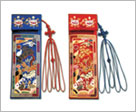
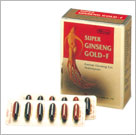

|
|
瓷器
在普通瓷器店可買到茶杯, 碟子, 茶器, 飯碗, 裝飾用品等。 如要購買更加珍奇的高價品,
需要流覽專業工藝店或前往陶藝村。 |
|
胸背
是朝鮮時代裝飾王, 王世子, 文武百官官服前胸和後背的表章,
用于繡出逼真的兩隻老虎的武官官服。 |
|
針線包
古代韓國女人使用的針?包婺辿野峔茷O護手指的頂針和針?等。 隻老虎的武官官服。 |
|
扣飾
用來裝飾個人的扣飾是韓國旅游紀念品。 在仁寺洞, 南大門市場及韓服專賣店等可買到。 |
 |
七寶銀妝刀
銀妝刀不僅是裝飾品, 女人?護身也將其裝入衣袋隨身?帶。 七寶工藝是以金, 銀,
銅等做底刻入花,鳥, 人物等的工藝。 |
|  |
刺繡
刺繡是在綢緞上用?縫出圖案或文字, 用于衣服, 寢具, 包袱等。 這些傳統品目具有大?性,
價格低廉, 可以在紀念品店購入。 |
|
螺鑼漆器
螺鑼漆器是將綻放光彩的貝殼雕刻, 漆上各種彩條並用木板做底進行裝飾的工藝技法。主要生產地是慶尚南道統營。 |
|
畫閣工藝
畫閣工藝是韓國王室流傳下來的傳統工藝, 是用牛角做成的。 |
|
木工藝品
韓國的木工藝品中有許多反映悠久傳統的藝術性製品。 木工藝品從裝飾小物品到家具, 多種多樣。
這些製品可在觀光紀念品店或古家具店等購買。 |
|
扇
扇是用來搖出風消暑的用具, 為紳士瀟灑風流之用。
主要有畫有太極紋樣的太極扇和畫有四君子的合竹扇,合竹扇畫有山水畫, 四君子等, 具有美術性或古董價值。 |
|
韓紙工藝品
用楮樹做成的韓國傳統韓紙具有耐久性, 光澤性, 吸水性等特性。
用傳統韓國紙做成的韓紙工藝華麗鮮豔。 韓紙工藝是韓國藝術的貴重資產。 可裝小物品的盒子和韓紙木偶等可在紀念品商店看到。 |
|
木偶
韓國的民藝品店有身穿傳統衣裳的木偶, 是可給您留下記憶的禮物。 特別是身穿華麗傳統服裝的木偶,
此傳統韓服是婚禮時穿的衣服。 |
|  |
人參
人參是代表韓國的特產品, 種類很多。 不僅有純鮮人參, 而且還有各種加工製品。
特別是將水參蒸幹的紅參製品更受歡迎。 |
|
海苔
海苔是非常受歡迎的飲食品種。 在韓國可購買到用海菜加工而成的海苔。 為方便外國游客,
進行少量包裝生產, 在百貨店和觀光紀念品店, 傳統市場等地都有銷售。 |
|
泡菜
泡菜是韓國傳統飲食中最受歡迎的一種。 游客可在百貨店或免稅店買到。 為方便攜帶,
各種泡菜都進行真空包裝。 |
皮革製品
在韓國旅行期間, 可買到各種顏色和設計的皮革製品。 如同皮鞋, 箱包, 皮帶,
錢夾等的皮製品和皮夾克及外套價格比較優惠。 |
電子製品
電子製品可在百貨店, 電子代理店,
電子商街等買到。 在商店可以定價購買, 在龍山電子商街, 可以10~30%左右的優惠價格買到。 韓國是220v, 60Hz,
因此購買時要確認電壓。
|
韓服
韓服是由來已久的韓國人的傳統衣服。 如同韓國的各種藝術領域,
韓服也具有曲?美, 有飄然而下的長裙和收緊的衣袖。 這種服裝在韓服商店可買到。 |
|
箱包
在韓國可看到美觀, 琳琅滿目的各種箱包。 可購買到世界性名品以及品質優良的韓國產品。 |
|
衣類
游客可廉價買到用各種衣料和顏色做成的高質衣服。 這些在南大門市場, 東大門市場,
類似南大門市場的傳統市場都可買到。 |
特產品
韓國由于受到地理, 自然的影響, 各地區都出產獨特的文化和特產品。 韓國特?品中具有代表性的有陶瓷器, 紫水晶, 花紋席, 木刻製品, 螺鈿漆器, 人參, 松茸, 泡菜等。 |
|